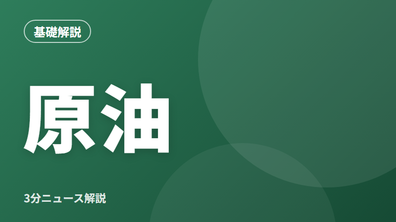
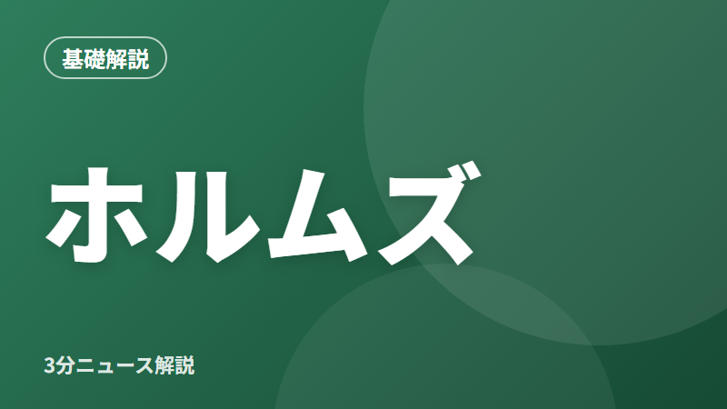

テーマ
原油・ガソリン・電気代など、中東情勢とエネルギー価格の動き。
6本の記事

原油は、ガソリンだけでなく発電やプラスチック、物流にも使われる

ホルムズ海峡は、中東のペルシャ湾の出口にある細い海の通り道
米軍が、ホルムズ海峡にあるイランのゲシュム島を攻撃したと米紙が報じた
高市首相が、ガソリン価格を抑える補助金の見直しを指示した
1ドル158円台半ばまで円安が進み、10月20日以来の水準になった
10月使用分の電気料金は、大手電力10社すべてで過去最高になった